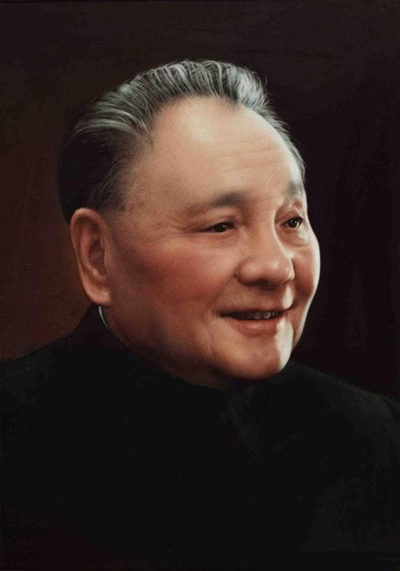

李大钊同志是中国共产主义的先驱，伟大的马克思主义者、杰出的无产阶级革命家、中国共产党的主要创始人之一，他不仅是我党早期卓越的领导人，而且是学识渊博、勇于开拓的著名学者，在中国共产主义运动和民族解放事业中，占有崇高的历史地位。

中国人民的领袖，伟大的马克思主义者，无产阶级革命家、战略家和理论家，中国共产党、中国人民解放军和中华人民共和国的主要缔造者和领导人，政治家，军事家，诗人，书法家。
1949至1976年，毛泽东担任中华人民共和国最高领导人。他对马克思列宁主义的发展、军事理论的贡献以及对共产党的理论贡献被称为毛泽东思想。因毛泽东担任过的主要职务几乎全部称为主席，所以也被人们尊称为“毛主席”。

周恩来（1898年3月5日-1976年1月8日），字翔宇，曾用名飞飞、伍豪、少山、冠生等，原籍浙江绍兴，1898年3月5日生于江苏淮安。1921年加入中国共产党，是伟大的马克思主义者，伟大的无产阶级革命家、政治家、军事家、外交家，党和国家主要领导人之一，中国人民解放军主要创建人之一，中华人民共和国的开国元勋，是以毛泽东同志为核心的党的第一代中央领导集体的重要成员 。

邓小平（1904年8月22日-1997年2月19日），原名邓先圣，学名邓希贤，四川广安人。早年赴欧洲勤工俭学，归国后，他全身心地投入党领导的争取民族独立和人民解放的革命斗争。从土地革命、抗日战争到解放战争，先后担任党和军队的许多重要领导职务，为党中央一系列重大战略决策的实施，为新民主主义革命的胜利和新中国的诞生，建立了赫赫功勋，成为中华人民共和国的开国元勋。

习近平，男，汉族，1953年6月生，陕西富平人，1969年1月参加工作，1974年1月加入中国共产党，清华大学人文社会学院马克思主义理论与思想政治教育专业毕业，在职研究生学历，法学博士学位。
现任中国共产党中央委员会总书记，中共中央军事委员会主席，中华人民共和国主席，中华人民共和国中央军事委员会主席。